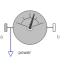

PowerMeasure power flowing from frame_a to frame_b |

|
Information
This information is part of the Modelica Standard Library maintained by the Modelica Association.
This component provides the power flowing from frame_a to frame_b as output signal power.
Connectors (3)
| frame_a |
Type: Frame_a Description: Coordinate system a fixed to the component with one cut-force and cut-torque |
|
|---|---|---|
| frame_b |
Type: Frame_b Description: Coordinate system b fixed to the component with one cut-force and cut-torque |
|
| power |
Type: RealOutput Description: Power at frame_a as output signal |
Components (1)
| world |
Type: World |
|---|